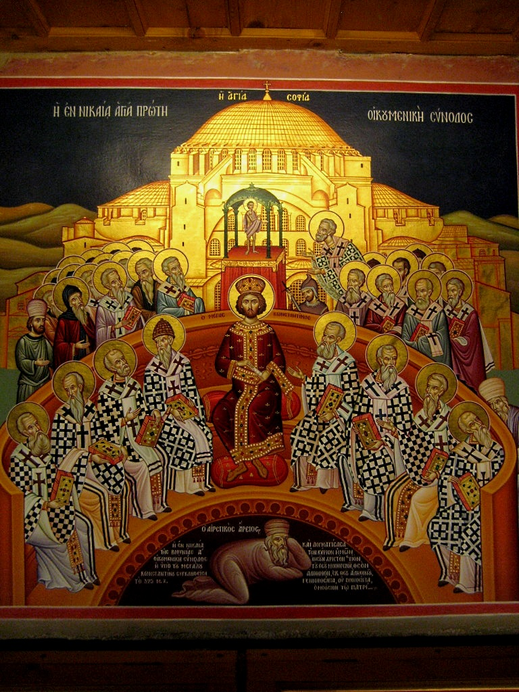
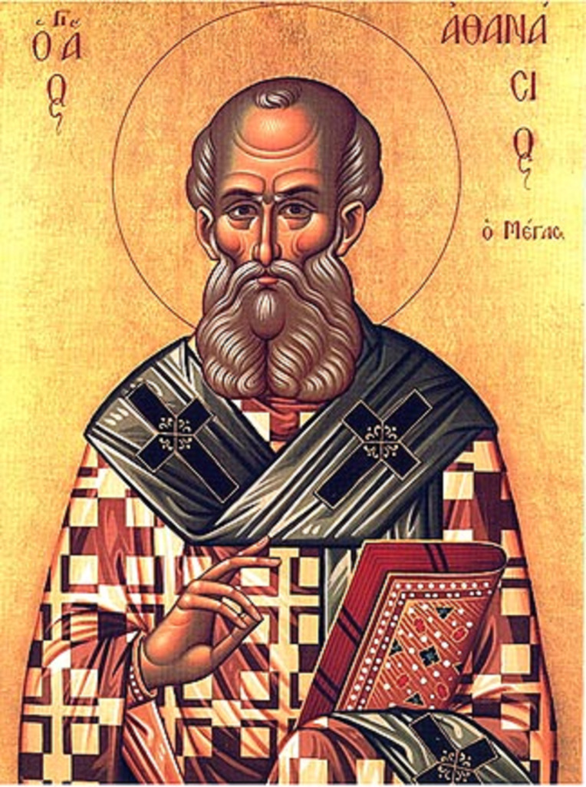

La frase que todo el mundo le atribuye entre comillas es la manera en que sus adversarios la resumieron para poder maldecirla.
Todo el mundo sabe lo que dijo Arrio. Dijo que hubo un tiempo en que el Hijo no existía. Es la frase con la que aparece en los manuales, en los documentales y en las discusiones de sobremesa, siempre entre comillas.
Esas comillas están mal puestas. La frase no está en ninguno de los textos conservados de Arrio. Es la fórmula del anatema con que el concilio de Nicea condenó su posición — es decir, la manera en que sus adversarios la resumieron para poder maldecirla.
Y el detalle técnico que la versión divulgativa estropea es exactamente el que a él le importaba.
El anatema niceno condena a quienes dicen ēn pote hote ouk ēn: «hubo cuando no era». No «hubo un tiempo cuando no era». La diferencia no es cosmética: Arrio evitaba deliberadamente las palabras «tiempo» y «eón», porque para él el Hijo es anterior al tiempo mismo. Decir «hubo un tiempo en que no existía» le atribuye justo lo que su formulación estaba construida para evitar.
Lo que él escribió, y esto sí está en sus cartas, es que el Hijo «no existía antes de ser engendrado». Y que fue engendrado «antes de los tiempos y de los eones».
Conviene ser justo con la fórmula del concilio: resume su posición con fidelidad razonable. No es una tergiversación, es una condensación hostil. Pero la manera honrada de citarla es esta: lo que Nicea condenó bajo la fórmula «hubo cuando no era» corresponde a lo que Arrio expresaba como «no existía antes de ser engendrado». Tres líneas en vez de cinco palabras, y la diferencia entre una cita y una atribución.

De sus tres cartas conservadas y de los fragmentos de la Thalía se puede reconstruir una posición coherente, y es más interesante que su caricatura.
Solo el Padre es ingénito, sin principio y eterno. «El Hijo tiene principio, pero Dios no tiene principio.» El Hijo fue engendrado antes de los tiempos y de los eones, por voluntad e intención del Padre. Es «criatura perfecta de Dios, pero no como una de las criaturas» — la segunda mitad de la frase se cae de casi todas las citas, y es la que lo distingue de un arrianismo de manual. Y fue engendrado «no en apariencia sino en realidad».
Hay además un rechazo expreso que vale oro para la entrega siguiente: Arrio niega que el Hijo sea una «porción consustancial del Padre», y atribuye esa idea a los maniqueos. Es decir: el mejor testigo de que la palabra homoousios tenía ya resonancia herética y materialista es el propio Arrio, cinco años antes del concilio.
¿Qué le movía? La reconstrucción mejor fundada —la de Rowan Williams— sitúa el núcleo en la doctrina de Dios, no en la cristología: la autosubsistencia única e inmaterial de Dios y la radical libertad de la voluntad divina. De ahí deduce el estatus creado del Hijo, y no al revés. Hay una segunda línea, que opera como motor y que conviene presentar como reconstrucción y no como cita: la impasibilidad. Si el Logos fuera del mismo ser del Padre, lo que le ocurre al Logos encarnado —nacer, sufrir, morir— tocaría el ser divino. Un Logos creado protege al Padre.
Arrio, visto así, no es un racionalista que rebaja a Cristo. Es un conservador que lleva una preocupación tradicional —la trascendencia absoluta de Dios— hasta el punto en que choca con las demás.
Circula un titular: que Rowan Williams demostró que el arrianismo nunca existió. Es falso, y la historia real es mejor.
Lo que Williams demostró en Arius: Heresy and Tradition (1987, reeditado en 2001) es que Arrio no fue un innovador radical sino un teólogo-escolar alejandrino conservador, deudor y a la vez crítico de la tradición de su ciudad y del círculo de su propio obispo; ni lucianista ni adopcionista; y que lo que se discutía no era lectura literal contra lectura alegórica sino «el sentido de la Escritura» tomada como un todo.
La demolición de la categoría «arrianismo» es obra colectiva y lleva setenta años. Telfer y Nautin empiezan a criticar el retrato atanasiano en 1949; Maurice Wiles ensaya una aproximación más simpática en 1962; Charles Kannengiesser da el giro metodológico en 1983 al sostener que la disputa entre Arrio y Alejandro no era de «arrianismo» sino hermenéutica; Williams publica en 1987; Hanson documenta en 1988 que el subordinacionismo era común; y en 1993 el volumen colectivo Arianism after Arius —editado por Michel R. Barnes y Daniel H. Williams, no Rowan, que ahí firma otro ensayo— reúne los trabajos que acaban con el esquema.
De ese volumen sale la formulación que hoy se cita: no hubo consenso sobre qué significaba «Arrio» para quienes lo invocaban. Y Lewis Ayres, en 2004, codifica el resultado: «es virtualmente imposible identificar una escuela de pensamiento dependiente de la teología específica de Arrio»; «las relaciones entre los llamados arrianos deben demostrarse, no presuponerse»; «se encuentra poca evidencia de conspiración arriana alguna». Arrio es, en su frase, «la chispa que encendió un fuego que esperaba producirse».
Ayres añade algo que merece subrayarse porque es lo contrario de lo que haría un polemista: se abstiene expresamente de construir una nueva tipología de partidos. No sustituye el esquema por otro. Lo disuelve en alianzas cambiantes, y prefiere hablar de trayectorias.
Empiezan a cuestionar el retrato atanasiano de Arrio. Setenta y siete años de desmontaje, y todavía no ha llegado a la divulgación.
El giro metodológico: la disputa entre Arrio y Alejandro no es de «arrianismo» sino hermenéutica.
Arrio es un conservador alejandrino, no un innovador radical. Y en el postscriptum: Atanasio «tenía razón en lo importante».
El subordinacionismo era común. Ninguna «herejía subordinacionista» emanó de Alejandría: era el aire que se respiraba.
«Las relaciones entre los llamados arrianos deben demostrarse, no presuponerse.» Y se abstiene expresamente de construir otra tipología en su lugar.
Hasta aquí, la entrega podría leerse como una defensa. No lo es, y toca decir por qué.
Que Arrio haya sido caricaturizado no significa que tuviera razón, y la posición nicena no era arbitraria. Tenía al menos tres argumentos de fondo, y los tres son serios.
El primero lo pone sobre la mesa Alejandro de Alejandría, y es anterior al concilio: si el Hijo tiene principio, hubo un Padre que todavía no era Padre. La fórmula que exige —«siempre Dios, siempre Hijo»— es precisamente la que Arrio se queja, en su carta a Eusebio, de no poder suscribir. La disputa no la abre Nicea. La abre un obispo con una pregunta incómoda.
El segundo es el argumento soteriológico de Atanasio, y se resume en una frase suya que ha hecho fortuna: «Él se hizo hombre para que nosotros fuéramos divinizados». La lógica es estricta: solo Dios diviniza, y una criatura no puede comunicar lo que no posee por naturaleza. Si el Logos es criatura, la salvación entendida como divinización se derrumba.
Y el tercero es de coherencia del culto, y es quizá el más fuerte: los cristianos bautizan en el nombre del Hijo y lo adoran. Si el Hijo es criatura, el culto cristiano es idolatría. No es un argumento teórico: describe lo que la Iglesia ya estaba haciendo, y pregunta qué ontología hace falta para que eso no sea un disparate.
Es exactamente la concesión que hace Rowan Williams en el postscriptum de su propio libro: que Atanasio «tenía razón en lo importante», porque vio que la teología de Arrio no podía dar cuenta de lo que la Iglesia hacía. El hombre que devolvió a Arrio su estatura de teólogo serio no escribe como su abogado.

Arrio murió en Constantinopla en 336, la víspera de su readmisión oficial, y murió —se cuenta— reventado en un retrete, con los intestinos fuera.
El relato tiene una sola fuente primera: una carta de Atanasio a un tal Serapión. Y conviene enumerar lo que eso significa, porque la historia se repite como si fuera un parte médico.
La cuenta su enemigo. La cuenta al menos cuatro años después, y quizá veintidós: la fecha de composición está en disputa, y hay un argumento fuerte a favor de la tardía —ningún escrito ni acta conciliar de Atanasio anterior a esa carta menciona la muerte de Arrio, y es difícil creer que guardara quince años un arma tan eficaz sin usarla—. La cuenta con un solo testigo, nombrado por él. La enmarca explícitamente como juicio divino, con eco deliberado de la muerte de Judas en Hechos 1,18. Y pide a Serapión que no lo divulgue ni lo copie — para a continuación repetir la historia él mismo en una carta circular a los obispos de Egipto y Libia.
Después la historia crece, y crece de un modo que se puede seguir. Rufino le añade público y la traslada a plena luz, durante una procesión, en un retrete público. Sócrates la lleva al Foro de Constantino, junto a la columna de pórfido —por una ruta que no era la del palacio a la iglesia— y añade detalle físico. Sozomeno mantiene el retrete pero ofrece explicaciones alternativas: enfermedad cardíaca súbita, apoplejía, juicio divino o magia; y cuenta que un partidario de Arrio demolió la letrina para borrar la memoria. Solo Teodoreto reproduce la carta de Atanasio sin adornos.
El estudio moderno de referencia no intenta averiguar de qué murió Arrio: dice que los detalles están «hace mucho fuera del alcance del historiador». Lo que rastrea es cómo mutó el rumor, y para qué servía — asociar la herejía con la inmundicia.
Por lo demás: la hipótesis del envenenamiento que circula en libros de divulgación no tiene estatus de hipótesis académica. Es conjetura, y la doy como tal o no la doy.
La misma medida de la entrega anterior, aplicada ahora a un solo hombre y con lupa. Cuatro piezas, y las cuatro llegan dentro de la obra de alguien que escribía para refutarlas. Pulsa cualquiera.
Que de Arrio sabemos poco y casi todo por sus enemigos. Que la frase que lo define no es suya. Que «el arrianismo» como movimiento coherente es en buena medida una construcción polémica. Y que nada de eso lo convierte en acertado.
La entrega siguiente va sobre el concilio que lo condenó, y sobre una palabra que, en 325, casi nadie quería usar.
Si usted ha llegado hasta aquí esperando saber quién tenía razón, la entrega le va a fallar, y le falla a propósito.
Describir cómo se formó una condena no decide si la condena era justa. El lado niceno tenía argumentos de fondo —la generación eterna, la divinización, la coherencia del culto— y Arrio tenía los suyos — la trascendencia absoluta de Dios y su impasibilidad—. Los dos lados discutían en serio, y presentar al perdedor como víctima es tan falso como presentarlo como villano. Esta entrega hace una sola cosa: devolver a Arrio sus propias palabras, que son pocas, y decir de dónde vienen las que le atribuimos.
Es consenso que de Arrio se conservan tres piezas epistolares completas —a Eusebio de Nicomedia, a Alejandro de Alejandría junto con sus colegas, y la confesión a Constantino firmada con Euzoio— y fragmentos de la Thalía; que las cuatro llegan por vía de adversarios; que ēn pote hote ouk ēn es la fórmula del anatema niceno; y que la categoría «arrianismo» como movimiento coherente no resiste el examen.
Está en debate abierto cuánto de los fragmentos de la Thalía es textual —Stead en 1978 y West en 1982 llegaron a conclusiones distintas, y West acepta como literales solo dos frases—; dónde y por qué se escribió la obra; y la fecha de la carta de Atanasio sobre la muerte de Arrio, que unos sitúan hacia 340 y otros en 358 o 359.
Dos correcciones a lo que suele leerse. La primera: el volumen colectivo de 1993 que consolidó la crítica a la categoría lo editaron Michel R. Barnes y Daniel H. Williams — no Rowan Williams, que colabora en él con un ensayo distinto, sobre el bautismo. El error es frecuente en castellano. La segunda: la carta a Alejandro se transmite en De synodis 16; el 15 es la Thalía. Y esa carta no es de Arrio en solitario: la firman él y sus colegas.
Y lo que esta entrega no hace, dicho una vez más porque aquí es donde más falta hace: decidir si Arrio tenía razón. La hagiografía del perdedor es un género tan cómodo como la hagiografía del vencedor, y produce libros igual de malos.
Los textos de Arrio. Carta a Eusebio de Nicomedia (Opitz, Urkunde 1), en Teodoreto, HE 1,5 y Epifanio, Panarion 69,6 · Carta a Alejandro de Alejandría (Urk. 6), en Atanasio, De synodis 16, Epifanio, Pan. 69,7 e Hilario, De Trinitate 4,12 · Confesión a Constantino de Arrio y Euzoio (Urk. 30), en Sócrates, HE 1,26 y Sozomeno, HE 2,27 · Thalía, fragmentos en Atanasio, De synodis 15,3 y Orationes contra Arianos I,5-6; 9; 11; 14. Edición: H.-G. Opitz, Athanasius Werke III/1, 1934, y Dokumente zur Geschichte des arianischen Streites, ed. Brennecke, Heil, von Stockhausen y Wintjes, De Gruyter, 2007.
Sobre los fragmentos. G. C. Stead, «The Thalia of Arius and the Testimony of Athanasius», JTS 29/1 (1978) 20-52 · M. L. West, «The Metre of Arius' Thalia», JTS 33/1 (1982) 98-105 · Samuel Fernández, «Arrio y la configuración inicial de la controversia arriana», Scripta Theologica 45 (2013) 9-40.
La reevaluación. Charles Kannengiesser, «Arius and the Arians», Theological Studies 44/3 (1983) 456-475 · Rowan Williams, Arius: Heresy and Tradition, Darton Longman & Todd, 1987; 2.ª ed. SCM/Eerdmans, 2001, con el apéndice «Arius since 1987» · R. P. C. Hanson, The Search for the Christian Doctrine of God, T&T Clark, 1988 · Michel R. Barnes y Daniel H. Williams (eds.), Arianism after Arius, T&T Clark, 1993 · Maurice Wiles, Archetypal Heresy: Arianism through the Centuries, Oxford University Press, 1996 · Lewis Ayres, Nicaea and its Legacy, Oxford University Press, 2004 · David M. Gwynn, The Eusebians, 2007.
La muerte. Atanasio, Epistula ad Serapionem de morte Arii (Carta 54), CPG 2125, PG 25, 685-689 · Rufino, HE · Sócrates, HE 1,38 · Sozomeno, HE 2,29 · Teodoreto, HE I,13 · Ellen Muehlberger, «The Legend of Arius' Death: Imagination, Space and Filth in Late Ancient Historiography», Past & Present 227/1 (2015) 3-29.